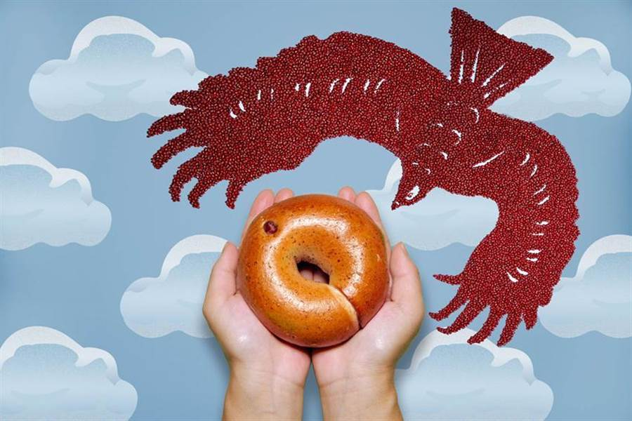

知名貝果品牌「好丘」宣布，推出友善貝果新品「紅豆牛奶」、
「五穀米香」兩種口味，原料選用「老鷹紅豆」、「石虎米」製成，
以行動支持產地農友，並邀大眾一同守護環境，即日起至12月31日，
消費者只要於好丘全台實體店或網路通路購買兩款友善貝果，好丘將捐出收入10％營收給「台灣猛禽研究會」及「台灣石虎保育協會」。
好丘表示，該品牌長期關注在地及環境議題，本次推出兩款環境友善新品「紅豆牛奶貝果」、「五穀米香貝果」，
分別與老鷹與石虎的保育團隊合作，傳遞在美味在地物產背後，是各方團隊致力改變耕作法，
避免對周遭生態系的破壞與逐步復育的良善心意，用以喚起大眾對環境的重視，一同正視生態失衡，一起支持環境友善。
